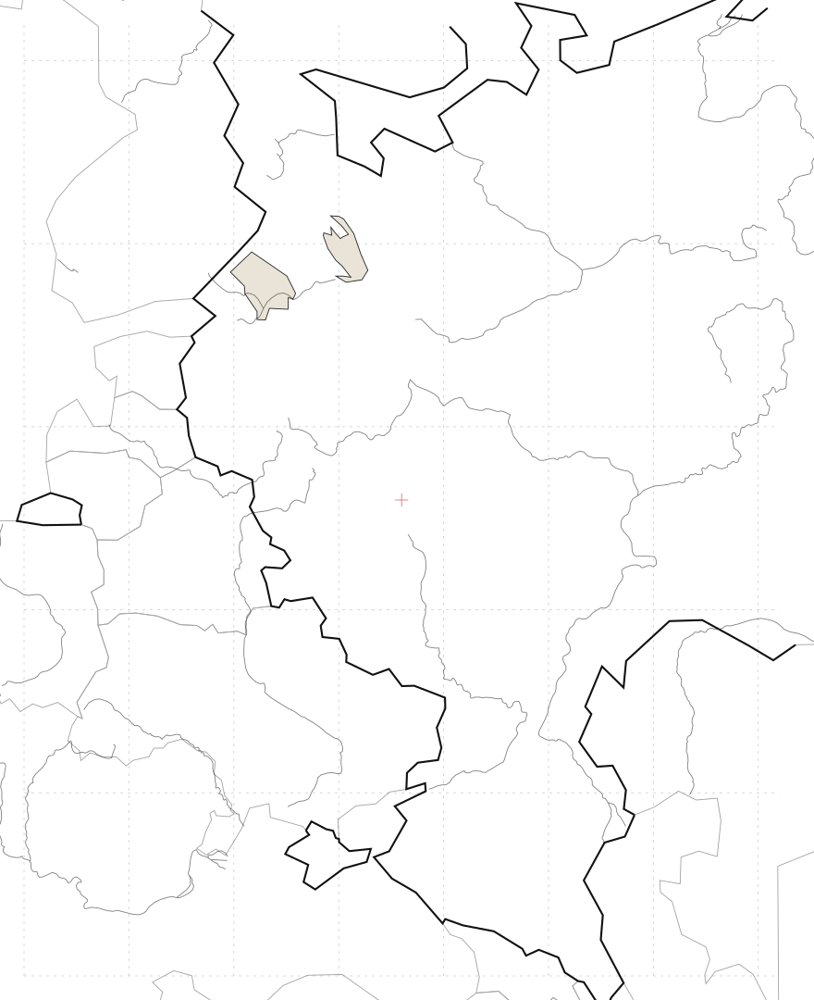

GEOGRAPHY — DOCUMENTED LOCALITIES ONLY
THE
MAP
Eight localities where the atlas has a documented basis for a claim. The map is a working sheet, not a distribution map: a photograph or a record is not a region.
Map of documented localities

BASE GEOMETRY: NATURAL EARTH 1:110M (PUBLIC DOMAIN). PROJECTION AND MARKS: THIS ATLAS.
GAZETTEER — SELECT A NUMBER
-
01 — RUSSIAN FEDERATION
Moscow
Vagankovo (plague dead, 1771); the Donskoy crematorium (1927); Novodevichy, the Soviet state necropolis; the Tomb of the Unknown Soldier (1967).
- Vagankovo Cemetery, founded 1771 for victims of plague
- Donskoy Monastery, site of the first Moscow crematorium (1927)
- Novodevichy Cemetery, the elite necropolis
- Tomb of the Unknown Soldier, Alexander Garden (1967)
55.74° N / 37.55° E
-
02 — RUSSIAN FEDERATION
St Petersburg · Pushkin (Tsarskoe Selo)
Smolensk cemetery (the 1881 memorial-meal photograph); Piskaryovskoye Memorial Cemetery (1960); the Field of Mars flame (1957).
- Smolensk cemetery — memorial meal photographed in 1881
- Piskaryovskoye Memorial Cemetery — blockade and front-line dead; memorial opened 9 May 1960
- Field of Mars — the flame lit in 1957, from which the Piskaryovskoye flame was taken
Kazan cemetery: a roofed grave-cross (golubets) photographed in 2013. Shown with St Petersburg on the map.
- Kazan cemetery — roofed cross, photograph by Messir, 2013
59.90° N / 30.32° E
-
03 — RUSSIAN FEDERATION
Novgorod
Icons of the Last Judgment from the 1540s, recorded as coming from the Nativity monastery; the Dormition icon from the Desyatinny monastery.
- Fragments of a Last Judgment icon, 1540s, from the Nativity monastery (Wikimedia Commons record)
- Dormition icon, 15th century, from the Desyatinny monastery
58.52° N / 31.27° E
-
04 — RUSSIAN FEDERATION
Olonets province (Karelia)
The region in which E. V. Barsov recorded the laments published in Prichitaniia Severnogo kraia (1872–1886).
- Lament texts and performers recorded for Barsov’s three volumes
61.60° N / 33.60° E
-
05 — RUSSIAN FEDERATION
Volga region
Provenance of the eighteenth-century Last Judgment icon (1770s–1780s) used in plate H.
- Last Judgment icon, tempera on wood, 180 × 137 cm
53.50° N / 47.50° E
-
06 — RUSSIAN FEDERATION
Volgograd (Stalingrad)
Mamayev Kurgan, the memorial complex on the site of the Stalingrad fighting.
- Mamayev Kurgan — memorial ensemble (photograph 2021)
48.74° N / 44.53° E
-
07 — RUSSIAN FEDERATION
Rostov-on-Don
Nizhne-Gnilovskoye cemetery: a photographed abandoned tomb, released under CC0. Used as the atlas’s single image of abandonment.
- Abandoned tomb at Nizhne-Gnilovskoye cemetery
47.24° N / 39.72° E
-
08 — OUTSIDE THE RUSSIAN FEDERATION
Khutir Tymky
A documented commemoration at graves, photographed in 2014. Included as a regional example and explicitly not as evidence for Russian practice.
- Commemoration at graves, 27 April 2014
50.00° N / 34.50° E
WHAT IS NOT ON THE MAP
No area is shaded, no custom is assigned to a region. Zelenin’s reports of the unclean dead come from many provinces but do not constitute a distribution; the roofed cross is photographed once here and is not mapped as a zone.
Where a source gives a place, the atlas plots the place. Where a source gives only a province or a region, the atlas says so in the entry. A single documented example is not a pattern, and the map is built to prevent that inference rather than to encourage it.